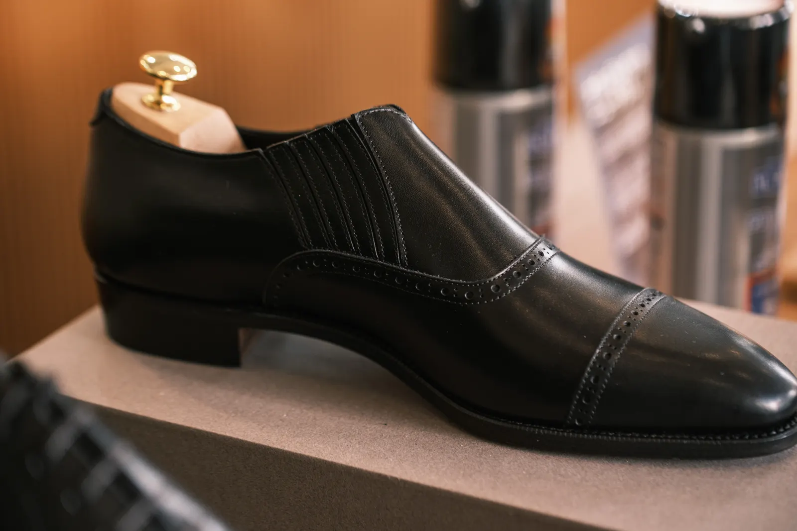
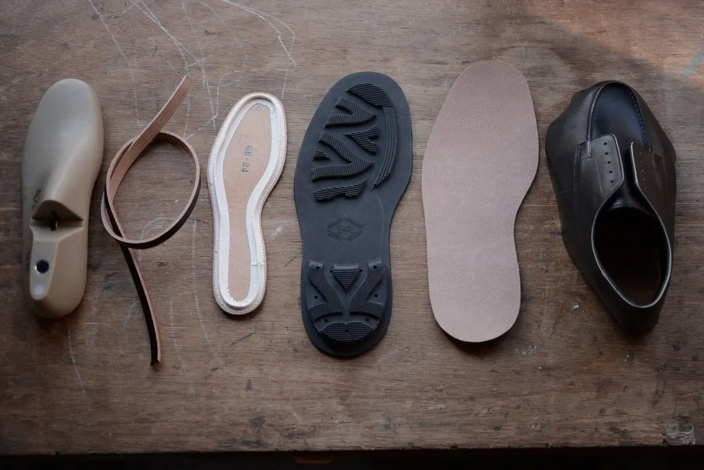
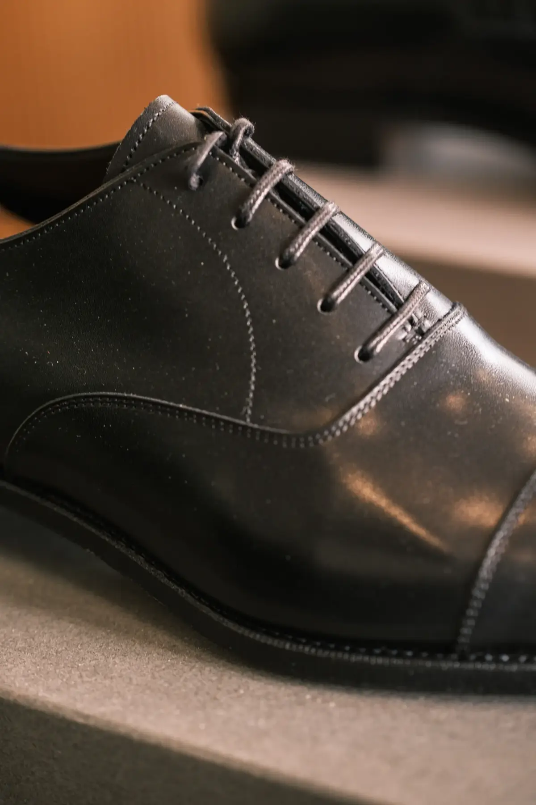

26S770C01
キャップトゥ オックスフォード
最初のモデル no.7701 を、12年を経て組み直した内羽根です。硬めの革と厚手の月型芯で、形が残りやすい一足です。
- 製法
- グッドイヤーウェルト
- 木型
- 770C
- 色
- ブラック
- 底
- 革底
- サイズ
- 23.5–28cm
- 価格
- ¥84,700（税込）
Brand
RENDOは、パタンナーの吉見鉄平さんによる革靴です。木型は、日本人の足の採寸をもとに、浅草のアトリエで削っています。つま先は、主張しすぎない形です。
多くのモデルはグッドイヤーウェルト製法。底を修理しながら履けます。このページは、公式に並んでいる既製と受注の8足です。
木型から起こすパターンオーダーは、別の仕立てです。スタート価格は105,600円（税込）。 内容を見る
日本人の足を採寸し、浅草で削っています。
基本はグッドイヤーウェルト。底を直しながら履けます。
愛知県の取り扱い店は、MOGGYSだけです。
Atelier
名前は「連動」。企画から工場へ足を運び、試作を重ねています。



Lineup
価格は RENDO 公式オンラインストアの税込価格です（2026年11月3日に確認）。店頭の在庫とお取り寄せは、工房へお問い合わせください。写真と仕様は、RENDO の許可を得て掲載しています。
8足
26S770C01
最初のモデル no.7701 を、12年を経て組み直した内羽根です。硬めの革と厚手の月型芯で、形が残りやすい一足です。


7705
2本の細いストラップと、小さめのバックル。甲の重なりを、すっきり見せるバランスです。


7703
紐はありません。両脇の伸縮素材で、脱ぐ機会の多い日に履きやすい内羽根です。


R7706D
くるぶし丈です。スムースレザーと、チャールズ・F・ステッドのスエードがあります。


26S270H01
no.2701 を、スリッポン用の木型 270 で見直したローファーです。紐で調節できないぶん、履き口を詰め直しています。


26S270P002GS 受注生産
2枚の革で構成したスリッポンです。履き口にリザードヌバックを合わせています。受注で、納期の目安は3〜4か月です。


GB001
エプロントゥの外羽根です。ドレスの木型 770 とは別の、カジュアルな木型 GB。底はリッジウェイソールです。


26SGBFG 受注生産
ボディにパンチング、フェイスはアデレード。裏なしで、グッドイヤーウェルトです。2019年の FG から派生したモデルです。
写真と商品仕様は、RENDO（株式会社スタジオヨシミ）の許可を得て、 公式サイト の内容をもとに掲載しています。価格と在庫は変わることがあります。中古の革靴は こちら。
Contact
サイズや色、試し履き、当日見られる靴、取り寄せについては、メールまたはお電話でどうぞ。